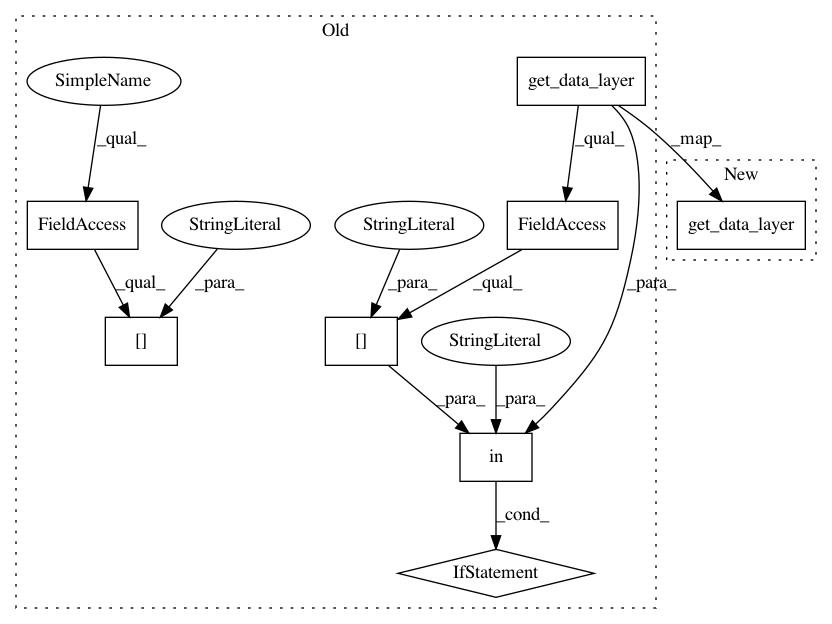

0e12fe12ea2f001ea3e4bf4d6cb5d6c6cab2a8cb,open_seq2seq/models/text2speech.py,Text2Speech,finalize_inference,#Text2Speech#Any#Any#,365
Before Change
if "magnitude" in self.get_data_layer().params["output_type"]:
predicted_final_spectrogram_sample = self.get_data_layer().denormalize(predicted_final_spectrogram_sample)
predicted_final_spectrogram_sample = np.exp(predicted_final_spectrogram_sample)
save_audio(predicted_final_spectrogram_sample, self.params["logdir"], 0, mode="infer",number= i*batch_size+j)
elif "mel" in self.get_data_layer().params["output_type"]:
save_audio(predicted_final_spectrogram_sample, self.params["logdir"], 0, mode="infer",number= i*batch_size+j)
// if "spectrogram" in self.get_data_layer().params["output_type"]:
// save_audio(predicted_final_spectrogram_sample, self.params["logdir"], 0, mode="infer", number=i*batch_size+j)
After Change
// print(predicted_final_spectrogram_sample.shape)
if audio_length > 2:
predicted_final_spectrogram_sample = predicted_final_spectrogram_sample[:audio_length-1,:]
predicted_final_spectrogram_sample = self.get_data_layer().get_magnitude_spec(predicted_final_spectrogram_sample)
wav_summary = save_audio(predicted_final_spectrogram_sample, self.params["logdir"], 0, mode="infer",
number= i*batch_size+j, save_to_tensorboard = False)
In pattern: SUPERPATTERN
Frequency: 3
Non-data size: 8
Instances
Project Name: NVIDIA/OpenSeq2Seq
Commit Name: 0e12fe12ea2f001ea3e4bf4d6cb5d6c6cab2a8cb
Time: 2018-06-28
Author: jasoli@nvidia.com
File Name: open_seq2seq/models/text2speech.py
Class Name: Text2Speech
Method Name: finalize_inference
Project Name: NVIDIA/OpenSeq2Seq
Commit Name: 0e12fe12ea2f001ea3e4bf4d6cb5d6c6cab2a8cb
Time: 2018-06-28
Author: jasoli@nvidia.com
File Name: open_seq2seq/models/text2speech.py
Class Name: Text2Speech
Method Name: finalize_evaluation
Project Name: NVIDIA/OpenSeq2Seq
Commit Name: 0e12fe12ea2f001ea3e4bf4d6cb5d6c6cab2a8cb
Time: 2018-06-28
Author: jasoli@nvidia.com
File Name: open_seq2seq/models/text2speech.py
Class Name: Text2Speech
Method Name: maybe_print_logs